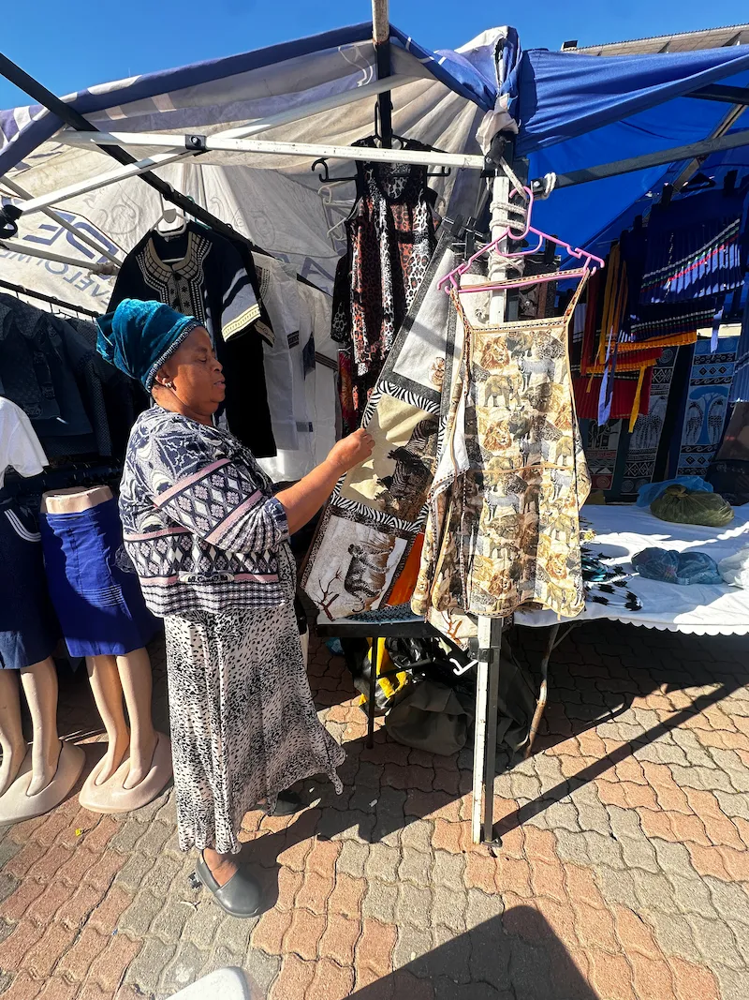
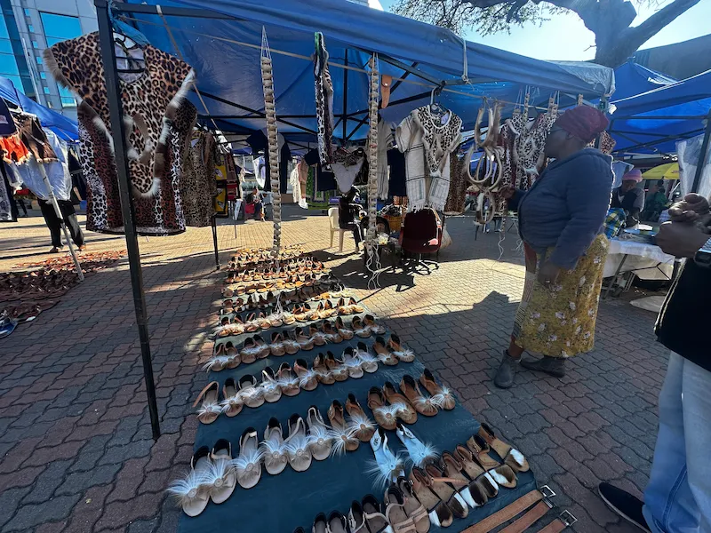
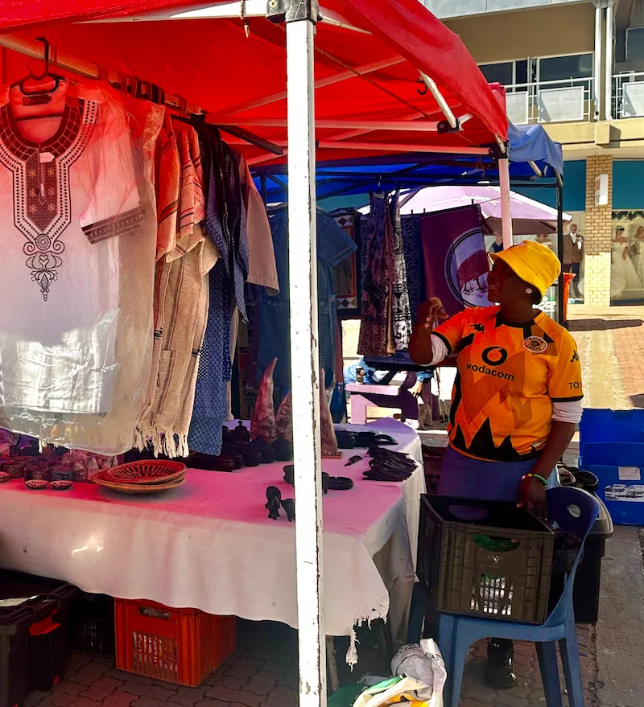
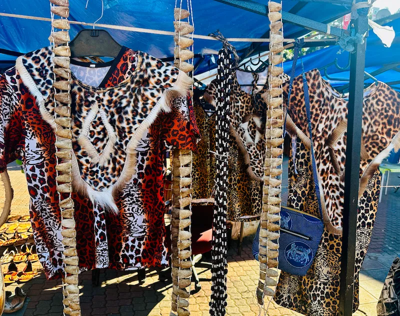
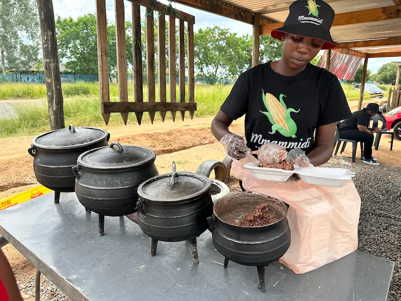
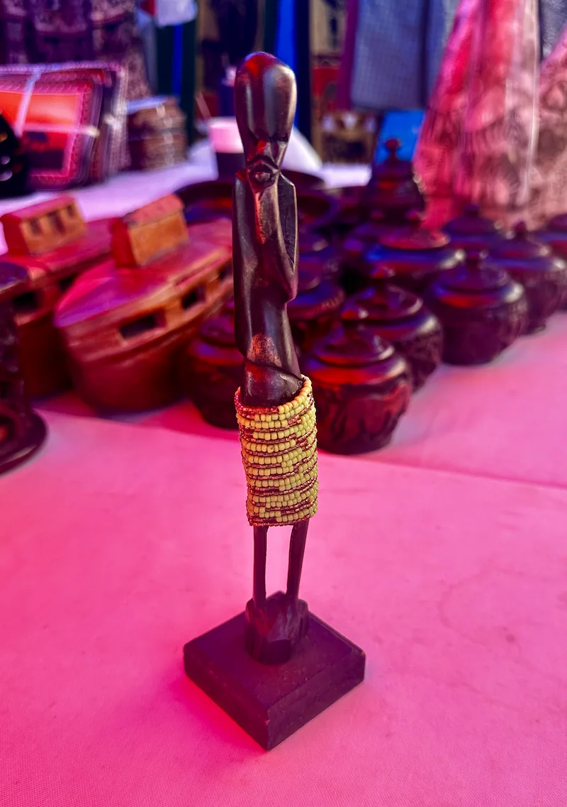
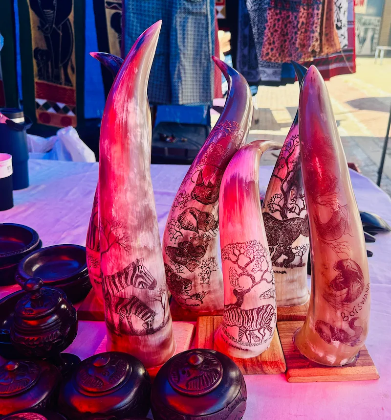
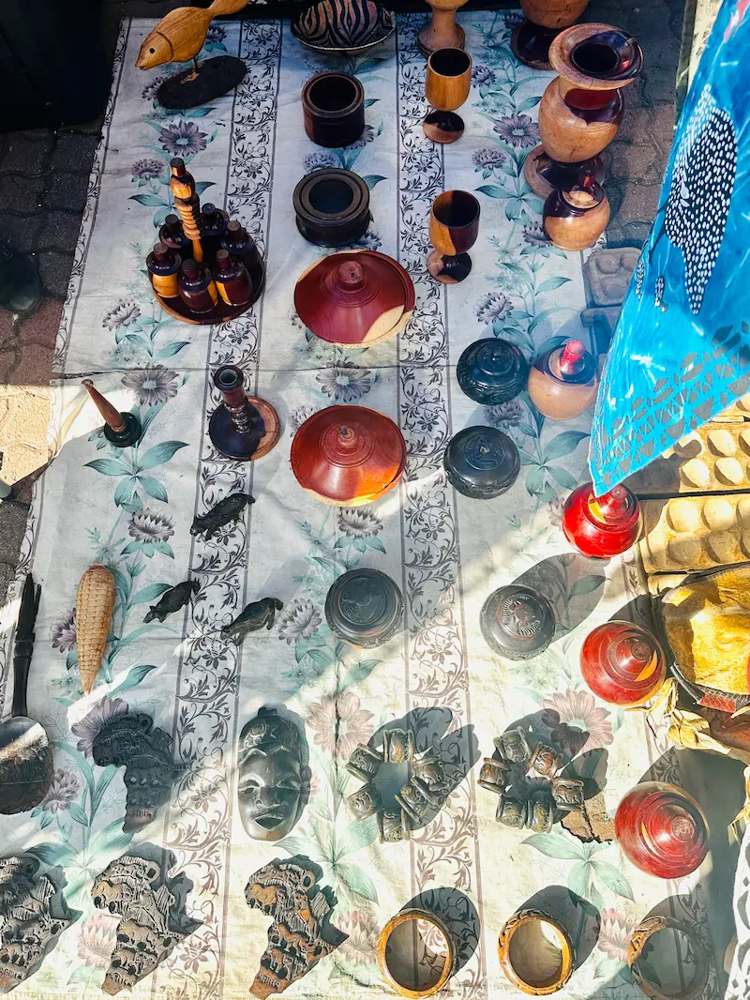
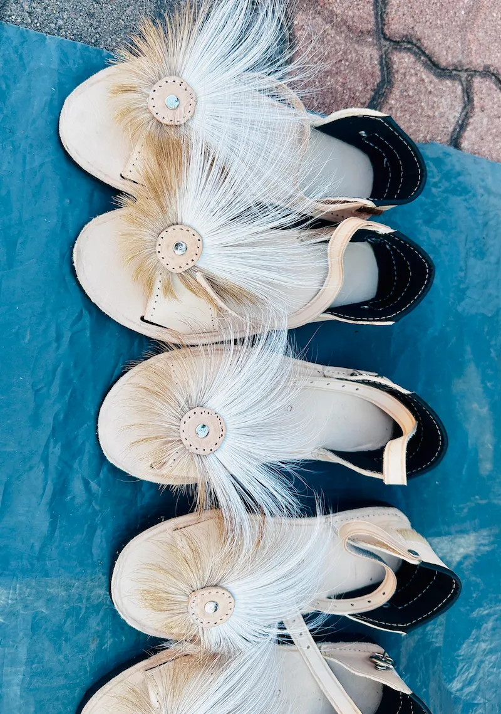

Kgomotso Mbeki
Mestre Teixidor
Expert en teixits tradicionals amb 30 anys d'experiència. Ha exhibits a museus de tot el món.
Experts internacionals en artesania tradicional de Botswana

Mestre Teixidor
Expert en teixits tradicionals amb 30 anys d'experiència. Ha exhibits a museus de tot el món.

Ceràmic Expert
Especialista en ceràmica tradicional del desert del Kalahari. Fundador de l'escola d'artesania.

Cisteller Mestre
Guardià de les tècniques ancestrals de cistelleria. Els seus treballs estan exposats al Museu Nacional.

Joiera Artesana
Creant joies úniques amb materials autòctons. Premiada internacionalment per Disseny Ètic.

Artista Rupestre
Documenta i preserva l'art rupestre del Kalahari. Autora del llibre "Colors del Desert".

Marroquiner
Mestre artesà en treballs de cuir. Utilitza tècniques tradicionals modernes per crear productes únics.

Escultor en Fusta
Mestre tallador de fusta mopane. Les seves escultures celebrateu la cultura tswana.

Estampadora Natural
Pionera en tècniques de tintura natural. Treballa amb pigments del desert per crear teixits únics.

Music i Artesà
Constructor d'instruments tradicionals. Els seus instruments han estat presentats en festivals internacionals.